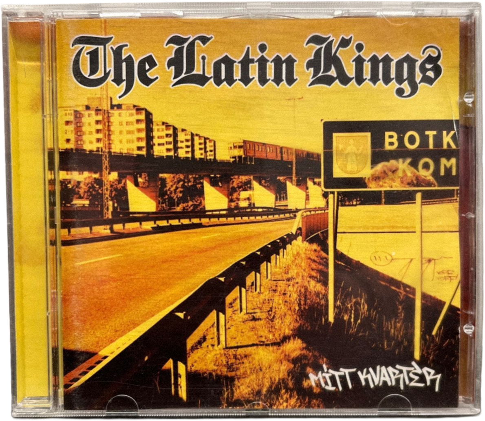

Det svenska passet är rankat som nummer tre i världen. Oddsen att födas med det: ett på 780. 0.13% chans. Andel utlandsfödda i Akalla: 80%. I Nockeby: 9%. På vilka villkor delar vi mark?


Ett album. Mitt kvarter, Latin Kings, 2000. Botkyrka. Det finns ju inte ens på kartan.